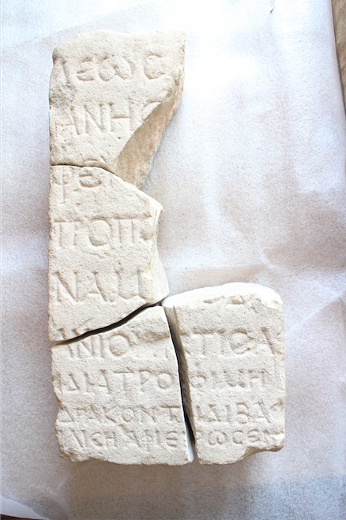

დრაკონტის დედოფლის წარწერაInscription of the Queen of Drakontis
დრაკონტის დედოფლის წარწერა
Inscription of the Queen of Drakontis
შინაარსი / Summary
შეწირვითი Donating
ბიბლიოგრაფია Bibliography
კრიტიკული გამოცემა Interpretive Edition
ράνης τρο-
φεὺ ς καὶ ἐπί-
τροπο ς ἰδίᾳ δυ-
5νάμ ει
ανῖον ἄρτισας
ἰδίᾳ τροφίμῃ
Δρακόντιδι βασ -
ιλί σσ σῃ ἀφιέρωσεν
დიპლომატიური გამოცემა Diplomatic Edition
ΡΑΝΗΣ ΤΡΟ
ΦΕΥ Σ ΚΑΙ ΕΠΙ
ΤΡΟΠΟ Σ ΙΔΙΑ ΔΥ
5ΝΑΜ ΕΙ
ΑΝΙΟΝ ΑΡΤΙΣΑΣ
ΙΔΙΑ ΤΡΟΦΙΜΗ
ΔΡΑΚΟΝΤΙΔΙ ΒΑΣ
ΙΛΙ ΣΣ ΣΗ ΑΦΙΕΡΩΣΕΝ

Fragments of a plaque from Armaztsikhe-Bagineti, 1993
{'ka': 'მეფის... ანაგრანესმა, მამამძუძემ და ეზოსმოძღვარმა, მოაწყო რა (?) აბანო (?) თავისი სახსრით, თავის აღზრდილ დრაკონტისს, დედოფალს, შესწირა. მეფის ... მამამძუძემ და ეზოსმოძღვარმა გააკეთებინა თავისი საზრდელით (ან სახსრით) მიწისქვეშა გაყვანილობა (ან წყალსადენი) და აბანო (ან წყალსადენი აბანოსთვის) და\n შესწირა დრაკონტის დედოფალს.', 'en': 'The Chief-of-the-Court and governor of the King … built these underground tubes (communications) and bath (and tubes for bath) with his own expenses and dedicated it to the Queen Drakontis.'}
{'ka': 'წარწერაში დაცულია ბერძნული ანბანის 17 ასო, ზოგი თითოჯერ, ზოგი მეტჯერ. წარწერის ენა არის კოინე. გამართული ბერძნულით არის დაწერილი.\n ერთი შემთხვევაა იტაციზმის ει|ι (βαλανεῖον - βαλανίον). ერთი ς-თაა βασιλιση. კლასიკური ნორმებიდან სხვა გადახვევა არაა.\n წარწერა შეწირვითი ხასიათისაა. ქართულ ონომასტიკონში ქალის სახელი "დრაკონტისი" პირველად გვხვდება. იგი ბერძნული წარმოშობისაა.\n სტრიქონთა სიმაღლესა და ასოთა სიდიდეში განსხვავების მიზეზი შესაძლოა ფილის მდებარეობა ყოფილიყო. თუ წარწერა ზემოთ იყო მოთავსებული და წამკითხველი მას\n ქვემოდან შეჰყურებდა, მაშინ ბუნებრივი ჩანს ზემოთა სტრიქონების სიმსხო და ქვემოთა სტრიქონების დამცრობა. 1995 წელს ფილის ზედა ფრაგმენტისა და 1996 წელს მეორე ბერძნული წარწერის აღმოჩენის შემდეგ\n თ. ყაუხჩიშვილმა კორექტივები შეიტანა წარწერის პირველ წაკითხვაში. დათარიღება: ისტორიული პირების მოხსენიების საფუძველზე დევიდ ბრაუნდი წარწერას III ს-ით ათარიღებს.', 'en': 'The inscription contains 17 letters from Greek alphabet, some of them with single usage, some - more. Inscription is in Koine; Following the language normes. One case of itacism present ει|ι (βαλανεῖον - βαλανίον).\n Word βασιλιση has one ς. There is no other alteration from the norms. The inscription represents the act of donation. The female name “Drakontis” appears for the first time in Georgian onomasticon. The origin of the name is Greek.\n The difference between the size and height of the letters can be caused by the location of the plaque. If the plaque was placed in a higher place and the reader would see it from the below, then the bigger size of the upper part and smaller of the lower part is natural.\n After the discovery of the upper part of the plaque in 1995 and also after finding the second Greek inscription in 1996 T. Kaukhchishvili made remarks in interpreting the first inscription. Date: on the basis of the personal names mentioned in the inscription David Brown gives the date of III century to this inscription.'}
<div type="edition" xml:lang="ka" ana="mtavruli" xml:space="preserve">
<ab>
<lb n="1"/><w lemma="ქრისტე"><expan><abbr>ქ</abbr><ex>რისტ</ex><abbr>ე</abbr></expan></w>
<w lemma="განსუენება"><expan><abbr>გა</abbr><ex>ნ</ex><abbr>ო</abbr><ex>ჳ</ex><abbr>ს</abbr><ex>უ</ex><abbr>ენე</abbr></expan></w>
<w lemma="სულ">სოჳ<lb n="2" break="no"/>ლსა</w>
<name nymRef="ვაჩა">ვაჩაჲს<lb n="3" break="no"/>ასა</name>
<name nymRef="გურა"><expan><abbr>გო</abbr><ex>ჳ</ex><abbr>რაჲ<lb n="4" break="no"/>სასა</abbr></expan></name>
<name nymRef="მირა"><expan><abbr>მ</abbr><ex>ი</ex><abbr>რა</abbr><ex>ჲ</ex><abbr>ს</abbr><ex>ა</ex><abbr>ს</abbr><ex>ა</ex></expan></name>
</ab>
</div>